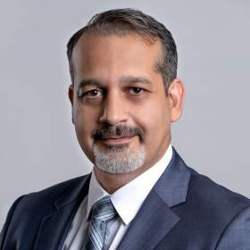
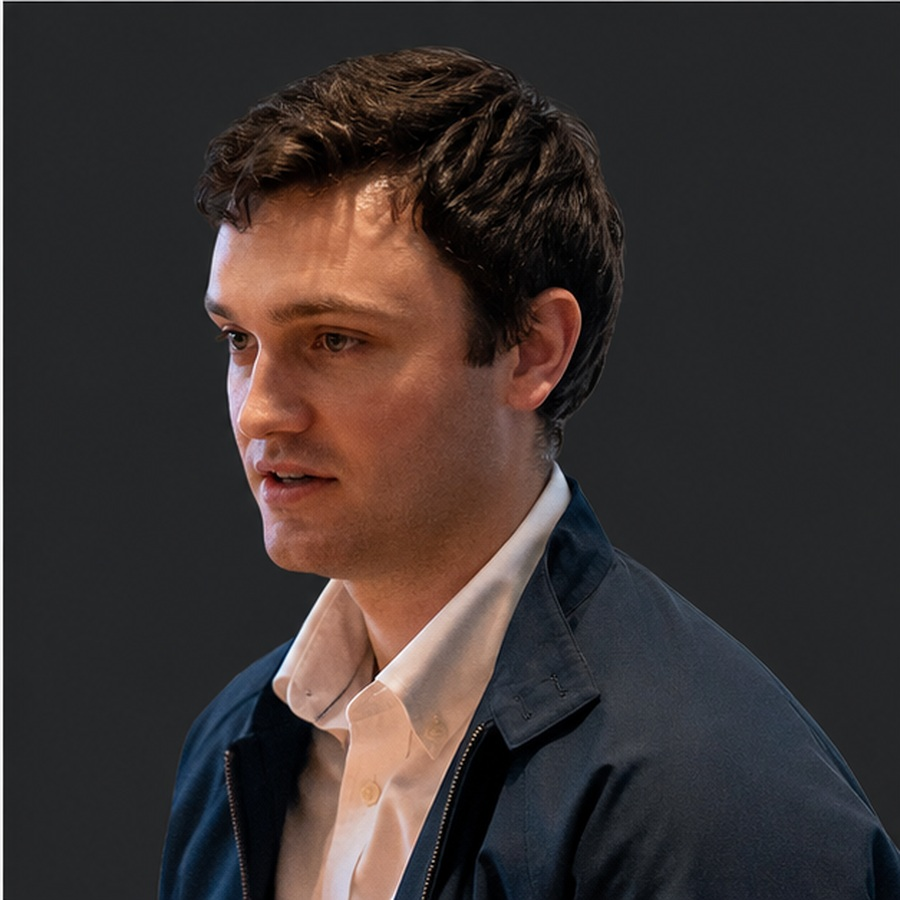
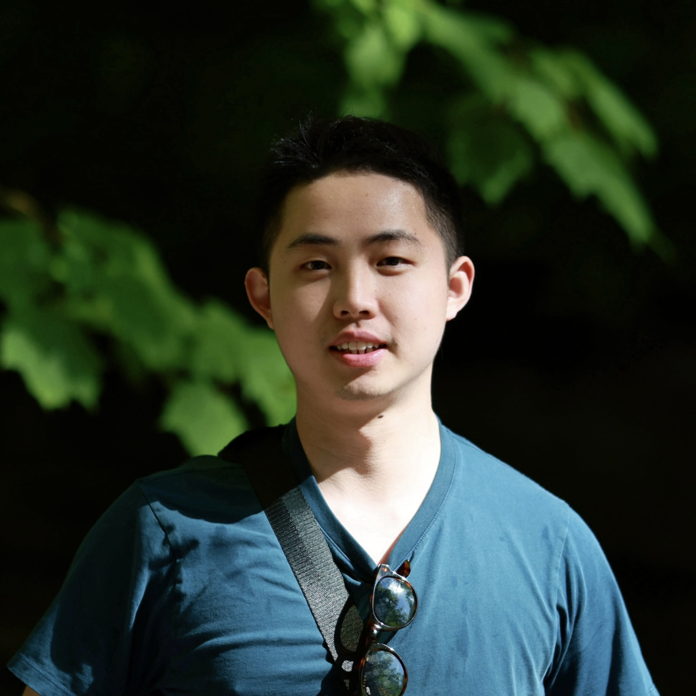
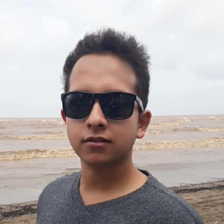

University at Buffalo
Team
Researchers bringing together terrain understanding, human and vehicle mobility, and mission planning.
Project Investigators
Principal Investigator
Souma Chowdhury
Professor
Mechanical and Aerospace Engineering
University at Buffalo
Research in design optimization, physics-informed machine learning, graph reinforcement learning, and multi-robot systems. Co-director of the Center for Embodied Autonomy and Robotics.
Faculty profile ↗
Co-Principal Investigator
Karthik Dantu
Associate Professor
Computer Science and Engineering
University at Buffalo
Research in perception, environment representation, and planning for safe and efficient robot autonomy. Director of the DRONES Lab and founding director of the Center for Embodied Autonomy and Robotics.
Faculty profile ↗
Co-Principal Investigator
Ehsan Tarkesh Esfahani
Associate Professor
Mechanical and Aerospace Engineering
University at Buffalo
Research in human-machine interaction, human and humanoid locomotion, bio-robotics, and artificial intelligence in engineering. Director of Graduate Studies in Mechanical and Aerospace Engineering.
Faculty profile ↗Co-Principal Investigator
Chen Wang
Assistant Professor
Computer Science and Engineering
University at Buffalo
Research in robot perception, spatial reasoning, and decision-making in unstructured environments. Develops neuro-symbolic learning methods for robot autonomy and leads work on differentiable robotics through PyPose.
Faculty profile ↗Student Researchers
Student Researcher
Pranay Meshram
PhD student · Computer Science and Engineering
University at Buffalo
Research in robotics, autonomous driving, robot perception, and artificial intelligence. Coauthor of CLEAR, a terrain abstraction framework for large-scale off-road planning.
Research profile ↗
Student Researcher
Kristian Dalland
PhD candidate · HILS
University at Buffalo
Research in human performance and cognitive metric estimation for operations involving multiple humans and agents.
Research profile ↗
Student Researcher
Zhipeng Zhao
PhD student · Computer Science and Engineering
University at Buffalo
Research in robot perception and neuro-symbolic AI. Lead author of Learning When to Jump for Off-road Navigation, presented at RSS 2026.
Research profile ↗
Student Researcher
Prithvi Poddar
Student researcher
University at Buffalo
Research in robotics, deep learning, reinforcement learning, and safety in multi-agent systems.
Research profile ↗Investigator roles follow the GRAPPLE introduction. Student participation and University at Buffalo affiliations are confirmed by the project team. Photos and research details are sourced from the linked university, lab, and researcher profiles.
{kind=link}